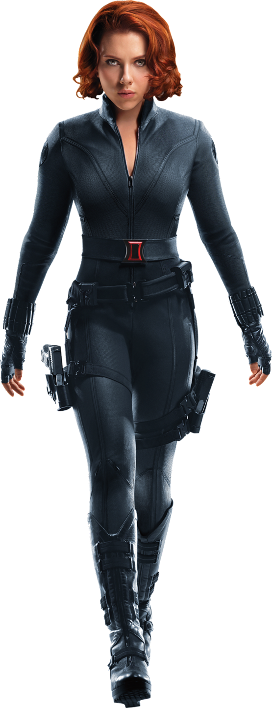

Natasha Romanoff
Treinada desde jovem no programa soviético Sala Vermelha, tornando-se uma das melhores espiãs e assassinas do mundo.
Pistolas, bastões elétricos, dispositivos tecnológicos, combate corpo a corpo e técnicas avançadas de espionagem.

Busca compensar os erros cometidos durante seu passado como assassina, tentando usar suas habilidades para proteger pessoas inocentes.
Não possui superpoderes. Depende totalmente de treinamento, estratégia e equipamentos em combate.